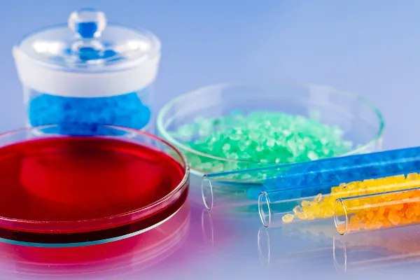
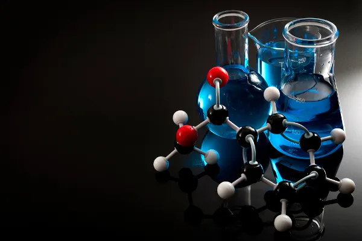

Química

Química Inorgânica
A Química Inorgânica é a subárea da Química que se dedica ao estudo das propriedades, estrutura e reatividade de compostos inorgânicos formados pelos elementos da Tabela Periódica, com exceção do carbono.

Química Orgânica
A Química Orgânica é a subárea da Química que explora as propriedades, os aspectos estruturais e a reatividade dos compostos orgânicos. Compostos orgânicos são formados predominantemente por carbono e hidrogênio e são chamados hidrocarbonetos quando formados unicamente por esses dois elementos.

Química Ambiental
Entende-se como Química ambiental o campo de estudos que tem por objetivo conhecer todos os processos químicos que ocorrem na natureza, seja de forma natural, seja provocado por alguma interferência humana.